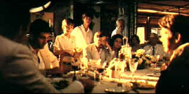

| Apocalypse
Now Redux/A-,A |
| Paramount/2001/202/ANA
2.0 |
On a stone wall at the temple steps
overlooking the jungle river the message "Our Motto: Apocalypse
Now!" is scrawled in thick white paint strokes. The steps form a
frightening tableau of Colonel Kurtz's renegade Montagnard gorilla forces gazing hungrily
at Willard's patrol boat. In the compound surrounded by the lush green leaves,
bodies hanging with casual disdain, body parts garishly proclaiming
horror, the phrase screams out on the stone. At the horrifying remote
jungle outpost, Willard will act out the ritual American sacrifice
echoing the tribal ceremonial slaughter of a water
buffalo.
 |
| Willard's
history lesson. ©Paramount |
.
Welcome back Apocalypse Now. Director Francis Ford Coppola has
decided to revisit his great war adventure with about fifty additional minutes added to the
film under the banner of Apocalypse Now Redux. Still brilliant, scathing, absurdly insightful,
Apocalypse Now Redux is one of the great war movies. I found it plays
pretty much the same with the additional scenes. Coppola fought
his own war to successfully complete his Vietnam vision with a determination of which any combat general would be
proud. His decision to travel back in time and add some material
originally trimmed adds to the overall excitement of seeing the film
again.
The lengthiest of the additional scenes is the French plantation
sequence. It includes a memorable dinner represented by various generations
of Colonial Vietnam. It’s essentially a history lesson and for those
not well-versed in the history of Vietnam, it’s edifying. Does it
comment on the film? Yes, it does, because it emphasizes the overall
absurdity of the war, the hopelessness of trying to cut down the wild
bamboo you planted many years before. It does slow the journey down,
however, so it a mixed success. An additional Playmate sequence may be
entertaining, but it does not add to the film's mystique nor does it emphasize the insane nature of the war; rather, it
detracts from it. The Playmate encounter again seems to serve little
purpose except to get some additional flashes of flesh into the jungle.
Additions to the Kilgore segment are terrific, building on the layers of
absurdity. And, of course, the more Kurtz the better; the ultimate
confrontation in the Kurtz compound is mesmerizing.
Apocalypse Now
Redux looks better than it's predecessor on DVD. The slight edge
enhancement and amplified grain in the original pressing has all but disappeared. Grain is very
fine and consistent in movement. Images are consistently sharp. The
complex lighting by cinematographer Vittorio Storaro is captured with
amazing color saturation. The smoke markers are especially
intense. Shadow detail is outstanding. The eerie image of Willard
rising from the water maintains shockingly precise detail and shading.
Black level is excellent throughout the presentation. The directionality
of the Dolby Digital 5:1 surround remains extremely accurate. The
transfer and pressing allow you to sit back and immerse yourself in a
remarkable film experience.
Link
to original Apocalypse Now Review
|
|
|
|

Selections from the Feature Archive
include articles on Akira Kurosawa, Frank
Darabont, Blonde Bimbos, Hollywood Street Gangs, or Vietnam: The
Hollywood Pariah, and many more....
Transferring
Zoetrope's Vision

American Zoetrope's Technical Director Kim Aubry talks about bringing the studios product out in
the best light. Click on the image for the interview.

The Court Jester/A,A-

Quite simply one of the funniest comedies ever made and the transfer is gorgeous.
 
The home of Francis Ford Coppola's Zoetrope
Studios has more corridors of interest than you might expect.

Terrific resource for learning about the ins and outs of movie
poster collecting.
 ETEKNet is the web's only 24-hour, totally FREE source for all your home theater,
DVD, Dreamcast, PC, and Networking tech support needs! ETEKNet is the web's only 24-hour, totally FREE source for all your home theater,
DVD, Dreamcast, PC, and Networking tech support needs!
 Graphic
Expectations is an excellent resource for large 47 x 63" French movie posters. Graphic
Expectations is an excellent resource for large 47 x 63" French movie posters.
 It rains a lot
in Portland, so DVDcorner.net
provides an umbrella of entertainment with lots of DVD reviews and DVD news. Check out the monthly
give-a-ways too!. It rains a lot
in Portland, so DVDcorner.net
provides an umbrella of entertainment with lots of DVD reviews and DVD news. Check out the monthly
give-a-ways too!.
|